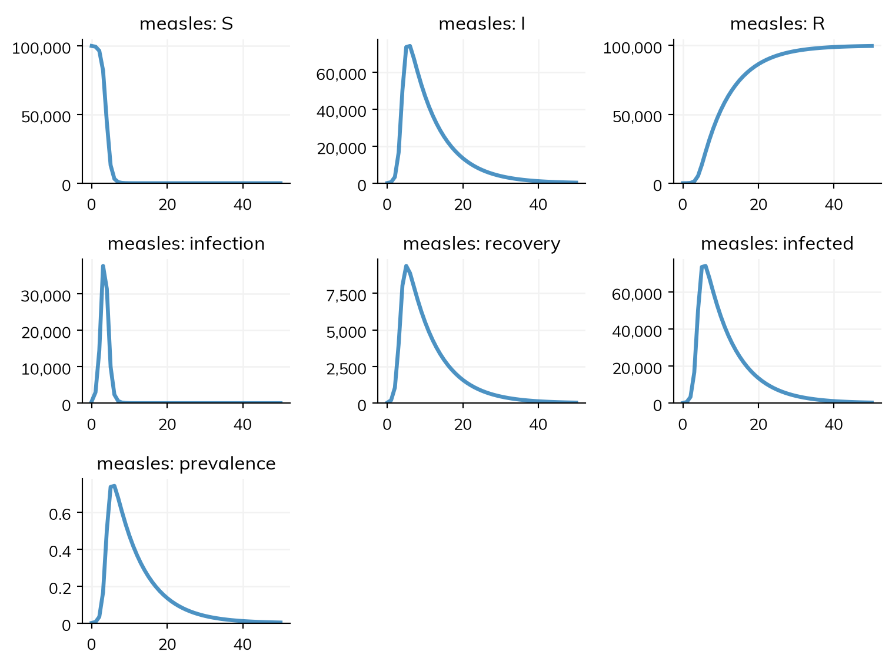
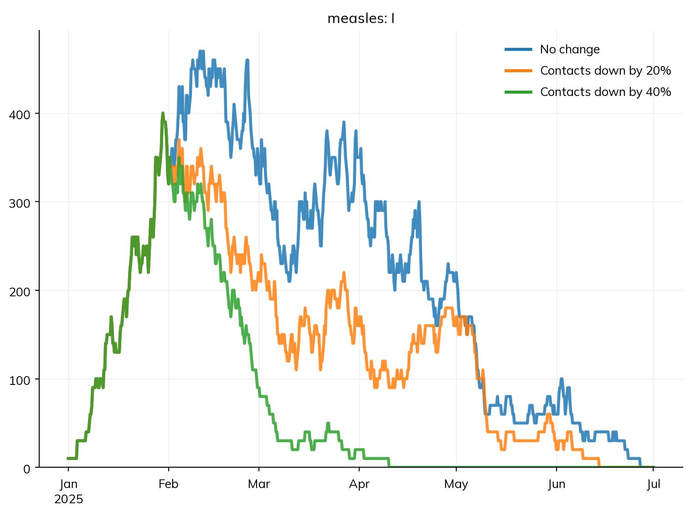

A sim (ss.Sim) is one model put together with everything needed to run it: the diseases, the population, the time span, how people mix, and any births and deaths, interventions, and analyzers. It runs them in the right order, and holds the results afterwards. T1 – Getting started and T2 – Building a model build and run the measles model used here; running many sims and comparing them is in Scenarios.
The smallest sim
A sim needs a model and, usually, a population and a time span. Here is a measles outbreak in a town of 100,000 people, run for 50 days:
import starsim as ssS, I, R = ss.states('S I R')beta = ss.par(1.9) # Transmission rate per dayinfection = S >> I @ beta*Irecovery = I >> R @ ss.days(8) # Infectious for 8 days on averagemeasles = ss.Disease(infection, recovery, init_prev=0.001)sim = ss.Sim(measles, total_pop=100_000, stop=ss.days(50))sim.run()sim.plot()
Sim: measles, 100,000 people, as an ODE, days 0 to 50
measles: R0 = 15.2, with 100 infectious at the start
Done in 0.0031 s; measles: 99,900 infections; at most 74,112 infectious, on day 6
library(starsim)states("S I R")beta <-par(1.9) # Transmission rate per daymeasles <-Disease(infection =Transition(S, I, rate = beta * I),recovery =Transition(I, R, dur =days(8)), # Infectious for 8 days on averageinit_prev =0.001)sim <-Sim(measles, total_pop =100000, stop =days(50))sim$run()sim$plot()
S, I, R = ss.State(name='S'), ss.State(name='I'), ss.State(name='R')beta_explicit = ss.par(ss.perday(1.9), name='beta') # Transmission rate per daymeasles_explicit = ss.Disease(transitions= [ ss.Transition(source=S, dest=I, rate=beta_explicit*I, name='infection'), ss.Transition(source=I, dest=R, dur=ss.expon(mean=ss.days(8)), name='recovery'), # Infectious for an exponentially distributed time of 8 days on average ],init_prev=0.001,name='measles',)sim_explicit = ss.Sim(diseases= measles_explicit,networks= ss.contacts(1), # Everyone mixes with everyone, with one contact per person per daytotal_pop=100_000,start= ss.days(0),stop= ss.days(50),dt= ss.days(1), # Steps of a dayunit='day', # The unit of bare numberssolver='ode', # Run as an ODErand_seed=1, # The random seed (it matters only for a stochastic run)verbose=1, # Print a line for what it runs, and one when it is done)sim_explicit.run()sim_explicit.plot()
Sim: measles, 100,000 people, as an ODE, days 0 to 50
measles: R0 = 15.2, with 100 infectious at the start
Done in 0.006 s; measles: 99,900 infections; at most 74,112 infectious, on day 6

A run prints:
What it runs, and how: the diseases, the population, the solver (here an ODE, since nothing in the model needs individual people; see Solvers and backends), and the time span.
R0 of each disease with the number infectious at the start, as a check that the model is the one you meant (here 1.9 × 8 ≈ 15); if some people start immune, the reproduction number at the start too.
Notes, if any: something Starsim assumed, approximated, or wants you to check, such as a step that is long for the rates in the model. Notes are kept in sim.notes too.
Progress, for a run that goes a step at a time (as agents, say), rather than all at once.
A closing line: how long it took, the total number of infections, and the size and timing of the peak.
How much is printed is set by verbose, given to the sim or to sim.run(): 0 prints nothing (the usual choice inside loops and fits), 1 the lines above (the default), 2 everything, and a fraction such as 0.1 the progress every 10% of the run.
What a sim takes
The settings of a sim are its keywords. Most models use only a few: the diseases (the first argument), total_pop, start and stop (or dur), dt, and the modules that say how people mix (networks) and what else happens (demographics, interventions, analyzers, connectors). Every setting, with its default, is in the appendix; sim.pars holds them all once the sim is made, and sim.describe() shows the whole model as Starsim has built it, with each value it chose itself marked (see Writing models).
total_pop and n_agents are separate on purpose. total_pop is the number of people the model stands for, and is the same under every solver; n_agents is how many individuals are followed when the sim runs as agents. Given both, each agent stands for total_pop/n_agents people, which saves time at the cost of coarser random events (see Branching and rescaling):
Sim: measles, as 10,000 agents, each 10 people, days 0 to 50
Running as agents: n_agents was given
Note: consider a shorter step (e.g. dt=ss.days(0.25)): each step is 1 day, and infection transmits at up to 1.9 per day (with everyone infectious), 85% in a step (and I is fast too). Taking whole steps, agents may differ from the ODE by an amount of that order; sim.check_dt() shows how much it matters
Done in 0.053 s; measles: 99,900 infections; at most 77,040 infectious, on day 9
The first line now says “as 10,000 agents, each 10 people”.
Settings in a dict
The settings can also be collected in a dict and passed together, which is handy when several sims share them:
pars =dict(total_pop=100_000, start='2025-01-01', stop='2025-03-01', verbose=0)town = ss.Sim(measles, **pars)city = ss.Sim(pars, diseases=measles, total_pop=1_000_000) # The same settings, with one changed
A dict given as the first argument is read as settings, and a keyword given as well overrides the same setting in the dict, as total_pop does for city. In such a dict, a module from Starsim’s library can be given by name (diseases='sir', with its default parameters) or as a dict of its parameters with its name as type (diseases=dict(type='sir', beta=ss.perday(0.1)), the same as diseases=ss.SIR(beta=ss.perday(0.1))), a shorthand found in many existing scripts.
What happens when a sim runs
What happens before the first step
Nothing is computed when a sim is made. sim.init(), which sim.run() calls if it hasn’t been called, builds the sim:
It fills in whatever was left out (the unit of time from the values in the model, how long each state lasts beyond its average, how people mix, where people start) and records each choice, so that describe() can show it.
It checks the model: unknown parameter names, values outside their bounds, and shapes that don’t match the model’s groups are errors here, before the run.
It chooses the solver, makes the people (with a default age and sex structure, unless a population is given; see People and demographics), adds each module’s states, parameters, and results, sets up the time steps, and starts the random number generators.
Calling sim.init() yourself is useful for looking at the people or the model before a long run, or for finding an error without waiting for one.
A sim copies the modules it is given, so the same disease can be given to several sims. After a run, use the sim’s own copy: sim.diseases.measles, not the variable measles, which is never run.
The order of each step
For a declared model, Starsim works out the order of everything in a step from the model itself. Modules written as code run at fixed points in the step: demographics, then disease progression, connectors, networks, interventions, transmission, and analyzers, so a child born in a step can be infected in it, and a new partnership can transmit in the step it forms. Take a woman with pre-symptomatic COVID who, in one busy day, develops symptoms, gets tested, moves out of her parents’ house into her husband’s, and becomes pregnant. Starsim orders her day: she (1) becomes pregnant, (2) develops symptoms, (3) moves house, (4) gets tested, and (5) transmits COVID to her contacts, who by now include her husband but not her parents. (That is for a disease written as code; a declared disease takes all its transitions at step 5.) sim.loop.to_df(), after sim.init(), lists every function called in every step, and sim.loop.plot() draws it; Steps and time points explains the order in full.
Running again, and variants
sim.run() on a sim that has already run runs it again from the start. To run it again with something changed, use sim.new(), which makes a new sim as this one was before it was run, with whatever is given changed. Here the same outbreak with a lower transmission rate, as if contacts were fewer:
What sim.new() changes can be settings (sim.new(total_pop=1_000_000), sim.new(solver='abm')), parameters of the model by name (sim.new(pars=dict(beta=1.2)), for a parameter made with ss.par(); see Parameters), or modules (sim.new(interventions=campaign)). This is the usual way to make the scenarios of a comparison (see Scenarios). sim.run() itself takes only until= and verbose=; two other ways of running again are sim.copy(), an exact copy, including the state of a sim part of the way through a run (below), and sim.restart(pars=dict(beta=1.2)).run(), which runs a sim again from its start with new parameter values (or rand_seed=), without building a compartmental model again, so many times faster.
Running part of the way
sim.run(until=...) runs up to a given time and stops, after the step that starts at that time; a later sim.run() carries on from there. This is useful for looking at a sim in the middle of a run, for changing it before going on, and for running a shared start once and then branching into scenarios, which in a stochastic run then share the chance events up to the branch point. Here measles, run as agents, reaches a town in which 90% are immune, and a month in, each scenario is a copy of the sim with contacts reduced by an ss.modify():
S, I, R = ss.states('S I R')beta = ss.par(1.9)measles = ss.Disease(S >> I @ beta*I, I >> R @ ss.days(8), init=dict(R=0.9), init_n=dict(I=10)) # 90% immune, 10 infectiousbase = ss.Sim(measles, total_pop=100_000, solver='abm', dt=ss.days(0.25), start='2025-01-01', stop='2025-07-01', verbose=0)base.run(until='2025-02-01')reductions = {'No change': 0, 'Contacts down by 20%': 0.2, 'Contacts down by 40%': 0.4}sims = {}for label, reduction in reductions.items(): sim = base.copy() sim.add_module(ss.modify('measles.pars.beta', multiply=1-reduction)) sims[label] = simmsim = ss.parallel(sims)msim.plot('measles.I')

A module added with sim.add_module() acts from the time it is added. Only modules that leave the layout of the model as it is can be added part of the way: a vaccine adds a state for the people who hold it, so ss.vaccinate() is given when the sim is made (with a start date). A parameter of the copy can also be set directly before it carries on (sim.diseases.measles.pars.beta = 1.9*0.6).
A shared start also saves time when it is long, such as a burn-in of decades before a few years of scenarios. For an ODE, it is simpler to run each scenario in full with sim.new() and an intervention that starts on the date.
Saving and loading
sim.save() saves a sim to a file, and ss.load() loads it again:
By default a saved sim that has finished keeps its results but not the people, which makes the file much smaller; a sim saved part of the way through keeps everything, so that it can be loaded and run on (shrink=False keeps everything in either case). sim.shrink() does the same in memory, and ss.parallel(..., shrink=True) does it to each run (by default, runs keep their people). A sim that keeps its people can be looked at person by person (sim.people.to_df(); see People and demographics), but a declared disease run as agents keeps only the times and histories the model reads (such as ti_I, when a duration needs it): make the sim with keep_times=True to read any other. A saved sim is a Python pickle, so it needs the same version of Starsim (and of any modules written as code) to load. For the results alone, sim.to_df() gives them as a table and sim.to_json() as JSON (see Results); to write the model itself in another format (SBML, odin), see Import and export.
Larger projects: make_sim()
A project with more than a few scenarios is usually built around one function that makes the sim, with an argument for each thing that varies, so that every scenario, seed, and calibration run is made the same way. It can get long: this is, after all, where most of the science happens. A sketch of the pattern, as an HIV project might have it:
import starsim as ssimport starsim.library as sslimport pandas as pddefmake_sim(seed=1, n_agents=10_000, start=1990, stop=2030, scenario='baseline', debug=False):""" Make the sim for one scenario and seed """if debug: # A quick version for testing the code n_agents, stop =1_000, 2000# Population and demography, from data people = ss.People(n_agents, age_data=pd.read_csv('data/age_dist_1990.csv')) pregnancy = ss.Pregnancy(fertility_rate=pd.read_csv('data/asfr.csv')) deaths = ss.Deaths(death_rate=pd.read_csv('data/deaths.csv'))# Networks, disease, and interventions sexual = ss.SexualNet() prenatal = ss.PrenatalNet() hiv = ssl.HIV(beta={'sexualnet': ss.peract(m2f=0.008, f2m=0.004), 'prenatalnet': 0.2}) interventions = []if scenario =='treat': interventions.append(ssl.ART(coverage=ss.timeseries({2004: 0.1, 2020: 0.8}, 'linear'))) sim = ss.Sim(people= people,diseases= hiv,networks= [sexual, prenatal],demographics= [pregnancy, deaths],interventions= interventions,start= start,stop= stop,total_pop=9.98e6,rand_seed= seed,label= scenario, )return sim
The scenarios and seeds are then a loop over its arguments, run together with ss.parallel() (see Scenarios); if making each sim is slow, they can be made in parallel too (see Speed and scale). Keep anything that differs between scenarios as an argument rather than editing the sim afterwards, and keep debug=True as a quick way to check the code end to end. For running such a project from a script or on a cluster, see Speed and scale.
Pitfalls
Reading a variable rather than the sim. A function given to a sim should read what it needs from the sim it is given (lambda sim: sim.diseases.measles.I.n), not from the measles you made, which is never run.
Changing a setting after the sim is built. Once a sim is initialized its settings belong to that run, and setting one (sim.pars.stop = 30) raises an error; give it to sim.new(stop=30) instead.
A sim that isn’t what you meant. Read the first lines a run prints, and sim.describe(): R0, the unit of time, and the solver catch most mistakes (see Profiling and debugging).
Every keyword of ss.Sim(), by what it is for; sim.pars (an ss.SimPars) holds them all once the sim is made, and the API pages for ss.Sim and ss.SimPars give the details.
Setting
Default
What it is
The model
first argument
The model: a module, transitions, or a list of them; or a dict of settings
Modules of each kind: a module, a name ('sir'), a dict with type, or a list. networks default to everyone mixing with everyone (Mixing); demographics=True gives births and deaths at 20 and 10 per 1,000 people per year
Modules of any kind together, sorted by kind; those of your own of no standard kind are in sim.custom
step_order
‘type’
The order the modules step in: 'type', each kind at its place in the step, or 'given', in the order they were given (the model and modules= first)
pars
none
Values of the model’s parameters by name, e.g. pars=dict(beta=0.1) or pars=fit.pars; it can hold settings too (pars=dict(start=2000, beta=0.1)), told apart by name, or be a whole ss.SimPars
The number of agents, for a run as agents; giving it makes the sim run as agents (and without total_pop, it is an error for a compartmental run). Each agent then stands for sim.pop_scale = total_pop/n_agents people
rescale
False
Dynamic rescaling, for agents: start at one person per agent, and grow by at least a factor whenever more than a given fraction of agents are no longer naive; True, or a dict of its options, e.g. dict(threshold=0.05, factor=1.2) (the defaults) (see Branching and rescaling)
aging
with demographics
Whether agents age; by default, only if there are births or deaths
stratify
none
Groups by a property of people for every module, e.g. dict(age=[0, 15, 65]) (see Stratification)
Time
start, stop
50 of the sim’s unit, from 0 (or from 2000 for a model in years)
The time span: dates, years, or, with no calendar, durations from 0. A date or a year as the start gives the sim a calendar, and every bare number given as a time is then a year
dur
none
The length of the run: the stop is the start plus it, or with a stop and no start, the start is the stop minus it; all three must agree if given
dt
1
The step, in the unit of time
unit
the model’s
The unit of time, and of bare numbers in declared transitions ('day', 'week', 'year', …)
How it is run
solver
'auto'
'ode', 'binomial', 'gillespie', 'tau', or 'abm'; or with options: ss.solvers.ode(integrator=, substeps=, dwells=), ss.solvers.binomial(substeps=), or ss.solvers.abm(step=) (see Solvers and backends)
branching
False
Run as a branching process: infection takes no one from the uninfected (see Branching and rescaling)
approximations
‘note’
What to do with each approximation a solver makes: ‘note’ notes it, ‘allow’ keeps the note in sim.notes without printing it, ‘error’ makes it an error
require_kernels
False
Raise an error, rather than run in Python, if a compartmental run can’t be taken whole in the kernels (see sim.describe())
rand_seed
1
The random seed, from which each module’s seeds are made
even_draws
False
For agents (an error for a compartmental run): space each call’s random numbers evenly, which reduces the variance between runs, but makes outbreaks die out less often than they should
Output
group_results
all
The results to keep by group (e.g. ['I', 'cases']); the others keep only their totals, which saves memory in a model with many groups (by default all are kept, but only every few steps if every step would take more than about 100 MB)
keep_times
False
For a declared disease run as agents, keep the time each agent entered every state (ti_S) and the history of every transition, to read after the run; by default only those the model reads are kept
record_people
True
Whether to record the people’s results (alive, female, died, emigrated) each step; False saves a little time in a light sim that doesn’t need them, though demographics read alive
label
none
A name for the sim, used in plots and comparisons
verbose
1
How much to print: 0 nothing, 1 the solver, notes, and progress, 2 everything; a fraction gives progress at each such fraction of the run